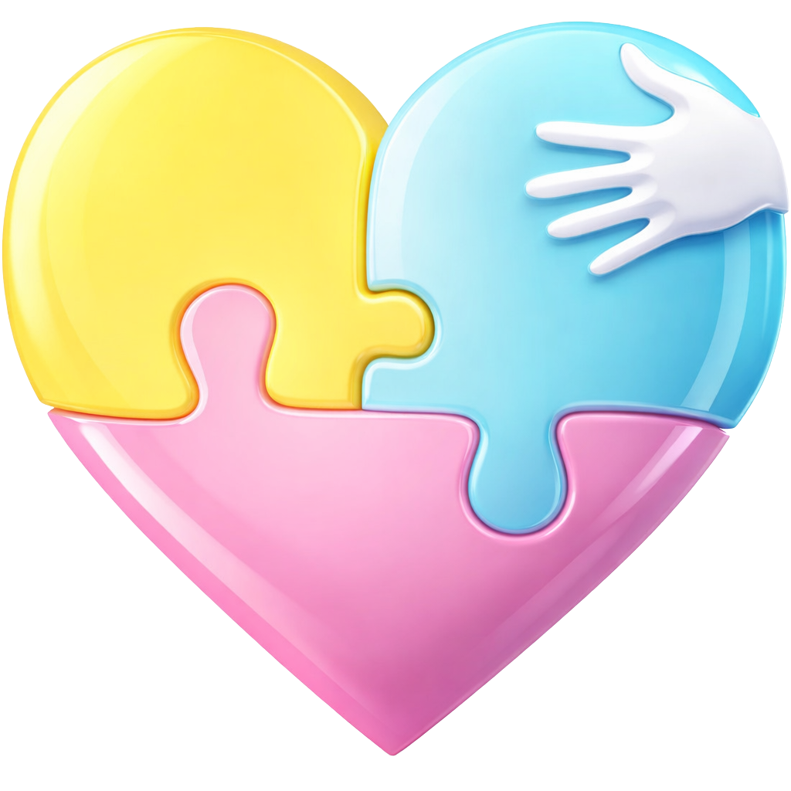

Una Nanny para cada momento de tu vida y la de tu peque. Conoce como podemos ayudarte en tu día a día y ser tu mejor aliado.
¿Para quién es? Ideal para acompañar a tu peque en su crecimiento del día a día, estimulando sus habilidades cognitivas, motrices y de lenguaje. Mientras atendemos sus necesidades básicas y rutina diaria de alimentación, higiene y descanso.
¿Para quién es? Papás que necesitan un respiro, ir al cine o una cena en pareja, atender un compromiso laboral, ayuda extra para ir de compras, a una cita médica o te acompañamos a una fiesta o reunión.
¿Para quién es? Padres que necesitan descansar, atender cuestiones laborales que se extienden o que tienen compromisos sociales nocturnos y quieren disfrutar con total tranquilidad.
¿Para quién es? Niños en etapa escolar que requieren apoyo profesional con tareas y regularización desde el respeto.
¿Para quién es? Anfitriones de bodas, bautizos o fiestas privadas que desean disfrutar sabiendo que los peques están seguros y divirtiéndose.
Todos nuestros servicios son atendidos por nannys amorosas que siguen nuestros valores. El Corazón ASC es nuestra esencia y la filosofía que guía cada uno de nuestros pasos para brindarte la mejor experiencia de cuidado.
Amamos profundamente lo que hacemos. Nuestra mayor pasión es ver cómo cada peque crece, aprende y florece a nuestro lado cada día.
Servir es nuestra vocación. Brindamos lo mejor de nosotras con energía y dedicación, buscando ser tu apoyo incondicional.
Cuidamos con el corazón. Creamos un ambiente de amor genuino donde cada detalle cuenta para tu tranquilidad y la seguridad de tu peque.

No te preocupes. Nuestro gran equipo te hará algunas preguntas muy sencillas para poderte ofrecer el servicio personalizado que tú y tu familia necesitan.
Cotiza GRATIS